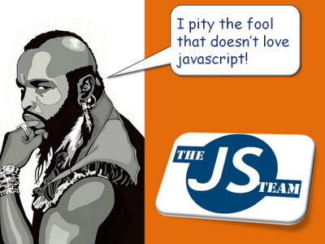

Week 3 Technical Reflections- Javascript
Javascript. Where do I begin?
Javascript has been around since the mid-90’s when it was developed as an alternative and competitive programming language to Microsoft’s Visual Basic. It was first marketed towards web industry laypeople to provide them with an easier to understand option for running scripts in the browser.

JavaScript is popular because it's based on web standards. JavaScript is governed by the World Wide Web Consortium (W3C) and having the support of a “democratic” and proactive organization provides developers with a sense of security. There are hundreds of thousands of JavaScript developers. This provides a large community of coders available to help each other on StackOverflow etc. as well as lots of job opportunities.
The most commonly referenced complaint when it comes to JavaScript are how its vulnerabilities have been exploited maliciously. While some of the fault for the attacks lies on the user side, some of the exposure is revealed by badly coded websites, browser vulnerability, and inadequate security on the server that hosts the website. This has improved in recent years and major Javascript vulnerabilities caused by the code are rarely seen.
Another complaint frequently lobbed at JavaScript is that a significant percentage of Web traffic is reloading the same JavaScript libraries over and over. Unfortunately, most websites do not yet user cacheable versions of standard libraries so the constant reloading of JavaScript libraries ends up wasting a lot of time and energy.
Despite Javascript's drawbacks it isn’t going anywhere, and, if current trends continue, it is on track to becoming the most popular programming language. It is light and convenient and flexible. It is rather easy to learn, and it provides users with a rich and enjoyable web experience.
- July 2014
- Posted in Blog
- Continue Reading »